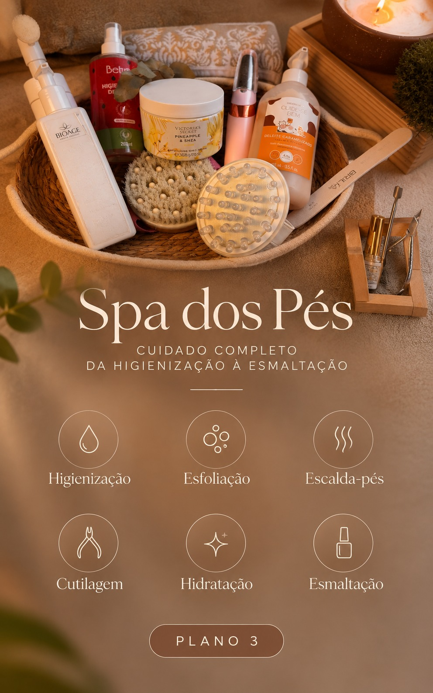

Rituais de cuidado
Seu momento, seu ritual.
Explore nossas experiências. Passe o mouse ou toque em um card para revelar cada ritual.
No celular, toque em um card para destacar a experiência.

Um ritual de ponta a ponta
Spa dos Pés
Um cuidado completo para desacelerar e renovar a sensação de conforto. A experiência reúne seis etapas:
HigienizaçãoEsfoliaçãoEscalda-pés
CutilagemHidrataçãoEsmaltação
Conhecer o ritual →